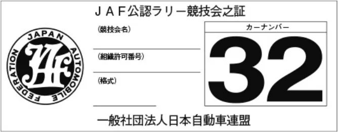

ラリー競技開催規定
JAF の公式サイトではありません。JAF が公開する PDF を自動変換した非公式の検索用アーカイブです。記載内容は必ず JAF の原本 PDF で出典をご確認ください。 検索と AI 質問つきのビューアで開く
P.1１９７４年１０月２９日制 定１９８２年１１月２４日改 定１９８６年１０月２３日改 定１９８８年 ２月１０日改 定１９８８年１０月１８日改 定１９８９年 １月 １日改 定１９９０年１０月２３日改 定１９９２年 ７月２１日改 定１９９３年 １月 １日施 行１９９３年１２月 ２日改 定１９９４年 １月 １日施 行１９９７年 ７月２４日改 定
ラリー競技開催規定
１９９７年 ９月 １日施 行１９９７年１０月２３日改 定１９９８年 １月 １日施 行１９９８年１０月２９日改 定１９９９年 １月 １日施 行１９９９年１０月２２日改 正２０００年 １月 １日施 行２０００年 ８月 １日改 正２００１年 １月 １日施 行２００１年 ３月３０日改 正２００１年 ４月 １日施 行２００２年 ７月３１日改 正
２００３年 １月 １日施 行２００３年 ７月２８日改 正２００４年 １月 １日施 行２００４年 ８月 ３日改 正２００４年 ９月 １日施 行２００４年１２月 １日改 正２００５年 １月 １日施 行２００６年 ３月２８日改 正２００６年 ６月 １日施 行２００７年 ８月 １日改 正２００８年 １月 １日施 行２００８年 ７月３１日改 正
２００９年 １月 １日施 行２０１２年 ７月２６日改 正２０１３年 １月 １日施 行２０１４年１１月２７日改 正２０１５年 １月 １日施 行２０１７年 ７月２７日改 正２０１８年 １月 １日施 行２０２１年 ７月２８日改 正２０２２年 １月 １日施 行
第１条 総則
一般社団法人日本自動車連盟（以下「ＪＡＦ」という。）は、国内競技規則および自動車競技の組織に関する規定に基づき、国内で開催されるＪＡＦ公認ラリー競技に適用する規定を以下の通り定める。
第２条 定義
１．タイムトライアル（スペシャルステージ）：あるコース上において個別に速さを競う競技をタイムトライアルといい、ラリー競技においてタイムトライアルを行う区間をとくにスペシャルステージという。
２．国内競技規則２−１４に定める第１類ラリーは以下の通り分類される。
１）第１種アベレージラリー：各チェックポイント間を指示された平均速度または所要時間に従って走行し、所定の到着時刻に対する早遅誤差の少なさを専ら順位判定の要素とするラリー。本競技の詳細は細則「第１種アベレージラリー開催規定」に定める。
２）第２種アベレージラリー：各チェックポイント間を指示された平均速度または所要時間に従って走行し、所定の到着時刻に対する早遅誤差の少なさを順位判定の要素とするが、コースの一部に参加車両の遅着を想定した指示速度を与える区間を含むラリー。本競技の詳細は細則「第２種アベレージラリー開催規定」に定める。
３）スペシャルステージラリー：１つ以上のタイムトライアル区間（スペシャルステージ）が設定され、当該区間での速さを順位決定の主たる要素とし、それ以外の区間は主として移動を目的とした走行に充てられる形式のラリー。本競技の詳細は細則「スペシャルステージラリー開催規定」に定める。
３．国内競技規則２−１４に定める第１類ラリーで用いる基本事項を以下の通り定める。
１）クルー：参加車両に搭乗する乗員をいい、ドライバーに加え少なくとも１名の乗員（ナビゲーターまたは本細則スペシャルステージラリーにおいてコ・ドライバーという。）で構成される。クルーの中に参加者がいない場合、参加車両に搭乗している間はドライバーが参加者の責任を負うものとする。
２）レストタイム：ラリー競技中、一定の時間停車し休息をとることを目的に、指示書又はアイテナリー等により指示される時間。レストタイムの指示は、「○○地点にて○○分間のレストタイム」と指示される場合と、レストタイムからの出発時刻を各々に指示される場合がある。
３）チェックポイント：アベレージラリー競技中において、指示書又はチェックカード等による指示に対して正確に走行したか否かを計測する地点。この地点にて渡されるチェックカードにより、新たな走行速度等が指示される。通常この地点での走行結果と指示との誤差は減点として競技成績に反映される。
４）チェックカード：アベレージラリーにおけるチェックポイントにて、チェックポイント通過時刻が記入され、新たな走行指示が記入されるカード。通常クルーに渡されたチェックカードは、各々のコントロールシートに貼付し、自己採点の上、オーガナイザーに提出する。
５）コントロールシート：アベレージラリーにおいて、チェックカードを貼付し、自己採点の上、オーガナイザーに提出することを目的とした用紙。
６）ラジオポイント：スペシャルステージ内走行中の競技車両の走行状況を把握し、事故発生時の効率的な救助活動を目的に、スペシャルステージ内に設置される地点。この地点では、通過確認（トラッキング）要員と緊急時要員が配置され、連絡用無線が設置される。また、赤旗が準備され、競技長の指示により赤旗が提示される場合がある。
P.2スペシャルステージ内にて赤旗が提示されるのはこの地点のみである。ラジオポイントは約５km毎に設置される。
７）タイムカード：スペシャルステージラリーにおける各タイムコントロールポイントにおいて、競技役員により通過時刻を記入されるカード。
８）タイムコントロール：スペシャルステージラリーにおいて、スタートからフィニッシュまで設置され、アイテナリー等によって指示された通りに到着したか否かを計測する地点。通常タイムコントロールへの到着時刻は、次のタイムコントロールへのスタート時刻となるが、スペシャルステージを伴う場合、スペシャルステージのスタート時刻が当該タイムコントロールのスタート時刻となる。
第３条 ラリー競技会組織に関する公認基準
１．ラリー競技会を組織するオーガナイザーは、別掲の「ラリー競技会組織に関する公認基準の表」に従わなければならない。
２．ＪＡＦが特に認めた場合を除き、同一オーガナイザーが同一日に複数のラリー競技会を開催することはできない。
第４条 組織許可手続きおよび報告義務
オーガナイザーは、細則「ラリー競技会の組織許可に関する細則」に従い、開催日前の定められた期限までに組織許可申請を行わなければならない。また競技会終了後は、同細則に定められた報告書類を期限までに提出しなければならない。
第５条 道路使用許可
１．競技が道路を使用して開催される場合には、警察から書面による許可（道路使用許可）を得ていなければならない。
２．タイムトライアル（スペシャルステージ）は、ＪＡＦ公認コースまたは道路に該当しない場所において行うこと。ただし、以下の場合はこの限りではない。
１）一般交通の用に供することを目的としている道路（市町村道等）においては、オーガナイザーが、沿道住民、観客、クルー、競技関係者等の安全性を確実に担保し、一般交通の遮断のための自主警備体制および競技中の事故に備えた緊急医療体制を確立したうえで、地域住民、道路利用者等の合意を形成し、当該道路管理者等から使用承諾書等を、所轄警察署長から道路使用許可を得た場合。
２）１）以外で実態として一般交通の用に供されている場所（林道、農道等）においては、オーガナイザーが当該場所の管理者等から使用承諾を得たうえで、当該場所を一般交通から遮断する措置をとる場合。この場合、オーガナイザーは、上記１）と同様の安全性の確保ならびに自主警備体制および緊急医療体制の確立を行うこと。
第６条 保険
ラリー競技会のオーガナイザーは、保険に関し、下記の措置をとらなければならない。
またオーガナイザーは、下記の保険の加入について競技会審査委員会に報告しなければならない。
１．オーガナイザーは参加者に対し、対人賠償保険（または共済等）および搭乗者保険（または共済等）の加入を義務づけること。
２．タイムトライアルの会場に観衆（観客）を入れる場合オーガナイザーは、当該競技会開催期間中、観衆（観客）に対し下表以上の当該競技内容に有効となるオーガナイザー賠償責任保険を付保しなければならない。
| オーガナイザー 賠償責任保険 | 対人賠償：１名１億円 １事故３億円 対物賠償：１事故１億円 |
３．オーガナイザーは、競技役員のうちコース上またはこれと類似する場所で役務につく者に対し、一人あたり５００万円以上のラリー競技会に有効な傷害保険（または共済等）を付保しなければならない。
第７条 罰則
本規定に違反したオーガナイザーおよび競技役員は、国内競技規則１１−３によって罰則の対象となる。
第８条 本規定の特例
本規定に適合しない特殊な組織申請については、その都度ＪＡＦの承認を必要とする。
P.3第９条 本規定の施行
本規定は、２０２２年１月１日から施行する。
ラリー競技会組織に関する公認基準の表
| 国際格式 （インターナショナル） | 国内格式 （ナショナル） | 準国内格式 （セミナショナル） | 地方格式 （リストリクティッド） | クローズド格式 （クローズド） | |
| 競技会 開催資格 | 過去に準国内格式 のラリー競技会を ３回以上単独主催 した実績を有する 公認団体および公 認クラブ | 過去に準国内格式 のラリー競技会を ２回以上単独主催 した実績を有する 加盟／公認クラブ または公認団体で あること。 | 過去に地方格式以 上のラリー競技会 を１回以上主催 （共催可）した実 績を有する加盟／ 公認クラブまたは 加盟／公認団体で あること。 （※注１参照） | 過去にクローズド 格式以上のラリー を１回以上主催 （共催可）した実 績を有する加盟／ 公認クラブまたは 加盟／公認団体で あること。 （※注２参照） | 準加盟クラブ以上 （ただし、準加盟 クラブはスペシャ ルステージを開催 することはできな い。） |
| 参加台数 | ９０台以下 | ７５台以下 | ６０台以下 | ４０台以下 | |
| 総走行距離 （※注３参照） | 制限しない | 500km以下 | 200km以下 | ||
| スペシャル ステージの 総距離 | 制限しない | 50km以下 （※注４参照） | 10km以下 （※注5参照） | 5km以下 （※注6参照） |
［※注１］1986年以前に準国内格式のラリー競技会開催実績のあるクラブには適用されない。
［※注２］国内スポーツカレンダー登録規定に従い1987年度中に1988年度のラリー競技会カレンダー申請を行ったクラブ、団体ならびに1987年以前にクローズド格式のラリー競技会開催実績のあるクラブには適用されない。［※注３］総走行距離とは、計時・採点の対象となる区間の始点から終点までの距離をいう。［※注４］ＪＡＦ公認コースで行うスペシャルステージの距離は含まない。［※注５］ＪＡＦ公認コースで行う場合を除き、１つのスペシャルステージの距離が５kmを超えてはならない。［※注６］スペシャルステージまたは第２種アベレージラリー開催規定第４条３．に該当する区間の開催場所はＪＡＦ公認コースまたは閉鎖された施設内に限る。また、１つのスペシャルステージまたは第２種アベレージラリー開催規定第４条３．に該当する区間の距離が２kmを超えてはならない。
P.4ラリー競技開催規定細則：ラリー競技会の組織許可に関する細則
２００６年 ３月２８日制 定２００６年 ６月 １日施 行２００８年１１月２７日改 正
２００９年 １月 １日施 行２０１２年 ７月２６日改 正２０１３年 １月 １日施 行
２０１７年 ７月２７日改 正２０１８年 １月 １日施 行２０25年 4月 1日改正施行
第１条 組織許可申請
ラリー競技会（クローズド格式を含む）の組織許可は、次の順序を経て行うものとする。
１．オーガナイザーより所轄警察署へ道路使用許可申請を行う。
道路使用許可申請者は、オーガナイザーの代表者もしくは当該競技会の組織委員でなければならない。
１）提出先
（１）スタートする地域を管轄する警察署へ道路使用許可申請を行う。コースが２都道府県以上にわたる場合は、各都道府県ごとに、最初に通過する地域を管轄する警察署に道路使用許可申請を行うこと。
（２）タイムトライアルを実施する場合は、申請書の方法または形態の欄に「タイムトライアルの実施」が明記されていなければならない。
（３）タイムトライアルの開催計画にあたり、その場所が道路に該当するか否かについて疑義が生じた場合は、所轄警察署に申し出て判断を仰ぐこと。
２）添付書類
（１）特別規則書草案
（２）コース図：国土交通省国土地理院承認済の都道府県地図上に、次の事項を記載すること。
①コース全体図：複数のステージまたはレグを設定する競技会についてはステージまたはレグ別コース図
②チェックポイントまたはタイムコントロールの位置およびタイムトライアルのスタート／フィニッシュの位置
③休憩所またはサービスパークの位置
④給油所の位置
（３）区間距離表またはアイテナリー（別紙推奨様式）
（４）その他の添付書類：オーガナイザーの任意により提出するもの（例：道路占用許可書、施設使用承諾書等）
（５）観衆（観客）導入計画書：ＪＡＦ公認レーシングコースおよびＪＡＦ公認スピード競技コース（２級以上）以外の場所に観衆を入れる場合。
２．オーガナイザーよりＪＡＦへ競技会組織許可申請を行う。
１）申請方法：所定の手続き方法で申請すること。
２）申請期限
（１）国際格式競技：４ヵ月前まで
（２）全日本ラリー選手権競技：３ヵ月前まで
（３）地方ラリー選手権競技：２ヵ月前まで
（４）国内格式競技：２ヵ月前まで
（５）準国内格式競技以下：45日前まで
３）提出書類等：次の申請手続きがない場合、申請は受理されない。
（１）組織許可申請
（２）道路使用許可申請書（写）およびその添付書類一式（前項参照）の提出
（３）タイムトライアル実施予定区間申告書：タイムトライアルを実施する場合は、その競技方法、実施場所ならびに管理方法等について所轄警察署に説明を行い、了解の得られた区間について、所定の「タイムトライアル実施予定区間申告書」をＪＡＦに提出すること。
（４）組織許可申請料：自動車競技に関する申請・登録手数料規定第２条参照
３．警察よりオーガナイザーへ道路使用許可証が交付される。
P.5４．オーガナイザーよりＪＡＦへ次の書類を提出する。
１）申請方法：所定の手続き方法で申請すること。
２）申請期限
（１）選手権競技：２週間前まで
（２）国内格式競技以上：２週間前まで
（３）準国内格式競技以下：１週間前まで
３）提出書類：次の書類の提出がない場合、公認は行われない。
（１）警察より交付された道路使用許可証（写）：許可条件が明記されている場合はこれも添付すること。
（２）競技長および事務局長の行動予定と連絡先を記した行動予定表
（３）セーフティプラン（第１種アベレージラリーを除く）
（４）競技参加者名簿
５．ＪＡＦよりオーガナイザーへ次の書類が交付される。
１）組織許可証
２）ＪＡＦ公認ラリー競技会之証（別図参照）
（１）競技参加車用：必要枚
（２）競技役員車用：必要枚
上記「ＪＡＦ公認ラリー競技会之証」を携行しない参加車両は、公認競技会とは無関係のものとして扱われるおそれがあるので、必ず参加車両に貼付させること。
６．オーガナイザーは国内競技規則４−10に従い、公式プログラムを発行しなければならない。公式プログラムには、同項に定めるもののほか、観戦場所を設ける場合には観客に対する情報および注意事項を記載すること。
第２条 報告義務
オーガナイザーは、競技会終了後14日以内に所定の手続き方法で次の書類を提出しなければならない。
１．公式プログラムまたは競技参加者名簿
２．競技役員名簿
３．公式通知
４．ロードブックまたは指示書・正解表
５．競技結果成績表
６．実際に使用したコース全体図
７．区間距離表またはアイテナリー
８．特別規則書に記載した競技距離と実際の競技距離とが著しく異なった場合には、その理由書および必要書類。
第３条 本規定の施行
本規定は、2025年４月１日より施行する。
ＪＡＦ公認ラリー競技会之証
本規定第１条５．２）に定める競技会之証は、下記の様式によるものとする。
